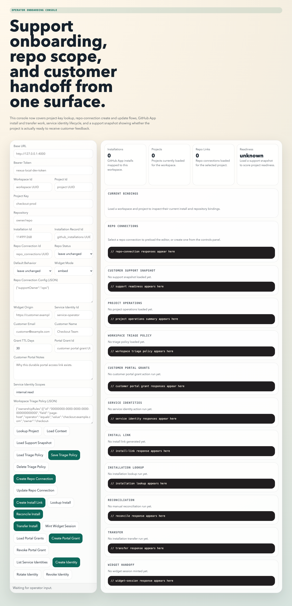
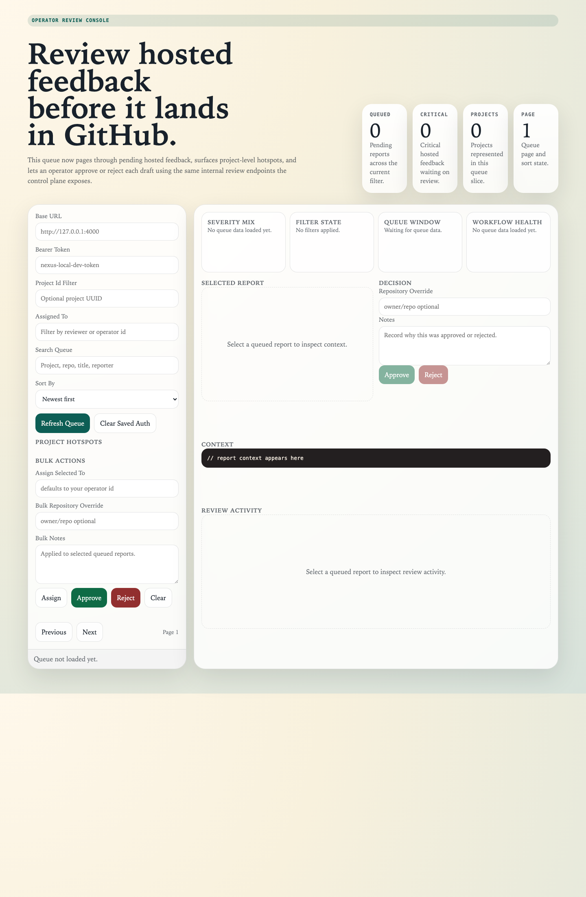
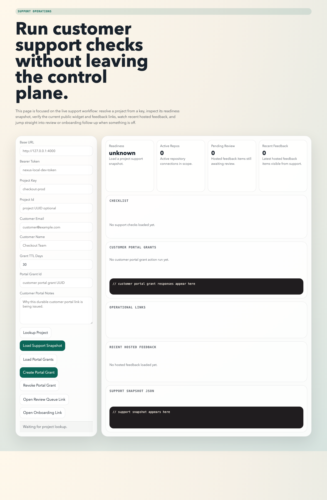

Connect the project, capture feedback, review the queue, then promote approved work.
AI-DevOps Nexus
Onboard operators without handing them a pile of routes and env vars.
This site teaches a new team member how Nexus moves from incoming feedback to reviewed, validated, and promotion-ready engineering work.
What operators should learn first
- How a workspace and project are created
- Which GitHub auth mode to choose first
- How the review queue gates GitHub actions
- When an agent execution is safe to promote
PAT mode for speed, GitHub App mode for production-grade scoping and auditability.
No issue creation or PR promotion should happen before review and validation gates are clear.
Overview
What Nexus actually does
Nexus is a control plane for operational signal. It accepts incoming feedback and observability reports, stores artifacts, prepares draft engineering context, and blocks GitHub-side actions until a human approves what should happen next.
For a new operator, the important distinction is this: Nexus is not just intake, and it is not just an agent runtime. It is the workflow between signal capture, decision-making, and controlled code promotion.
Operator mental model
- Resolve the project and repository context.
- Confirm the report is actionable in the review queue.
- Approve or reject downstream GitHub and agent activity.
- Promote only after review, validation, and merge readiness are visible.
Setup
First-day setup sequence
Create the workspace and project
Use the onboarding console to create a workspace, then create a project with a stable project key.
Attach GitHub access
Start with PAT mode for internal demos. Move to GitHub App mode when you need tighter repository scoping.
Configure intake surfaces
Mint widget sessions, validate the hosted feedback page, and confirm the public dashboard and customer portal work end to end.
Set triage policy and review ownership
Define default routing so the review queue and dashboard both reflect the same ownership model.
Baseline environment
APP_BASE_URL=https://your-nexus-host
GITHUB_AUTH_MODE=pat
GITHUB_TOKEN=github_pat_or_service_account_token
WEBHOOK_SHARED_SECRET=replace-me
PUBLIC_WIDGET_SIGNING_SECRET=replace-me
GITHUB_APP_STATE_SECRET=replace-meRoutes operators should know
/learn/onboarding
/learn/review-queue
/learn/support-ops
/public/projects/:projectKey/widget
/public/projects/:projectKey/dashboardWorkflow
The daily operating loop
1. Capture
Feedback arrives from the hosted widget, browser extension, or observability routes and is persisted with its project context.
2. Review
The review queue becomes the gate. Operators search, assign, inspect history, and approve or reject action.
3. Execute
Approved reports can spawn agent tasks that build a worktree, attach evidence, and persist validation results.
4. Promote
Only approved, validation-safe executions should be promoted into PRs and eventually merged.
Hosted feedback or webhook
Persisted report + artifacts
Review queue approval
Agent task + PR promotion
Surfaces
The actual operator screens

Onboarding Console
Project lookup, repo connection management, widget handoff, GitHub installation work, and service identity lifecycle from one operator surface.

Review Queue
The approval gate for hosted feedback, with queue search, assignment, paging, and the operator actions that control downstream GitHub activity.

Support Ops
Readiness checks, recent hosted feedback visibility, public-route verification, and fast links back into onboarding and review follow-up.
Playbooks
Practical usage patterns
Internal pilot
Use PAT mode, run the gateway and worker locally, and expose callback routes through a tunnel if you need GitHub App validation later.
Hosted feedback launch
Create widget sessions, validate customer portal grants, and confirm the dashboard only shows project-scoped, session-safe data.
Review-led GitHub rollout
Train operators that issue creation and PR promotion are not defaults. They are explicit post-review actions.
Promotion hygiene
Before promotion, confirm the execution has changes, review approval, non-failed validation, and a resolvable target repository.
FAQ
Answers new teams usually need
Should we start with PAT mode or GitHub App mode?
Start with PAT mode for speed. Use GitHub App mode once you need cleaner repository scoping, installation lifecycle control, and stronger auditability.
Do we need Vercel to test GitHub App onboarding locally?
No. For local validation, a tunnel to the running Nexus gateway is lower friction. Vercel is useful when you want a persistent public host for this documentation site or for a separately deployed environment.
What is the first page an operator should learn?
Start with the onboarding console, then move to the review queue. Those two screens establish project context and show the approval gate that governs downstream actions.
When should an operator promote an execution into a PR?
Only after the execution has changes, review approval, acceptable validation, and a healthy closeout state. The review queue and closeout surfaces exist to prevent premature promotion.